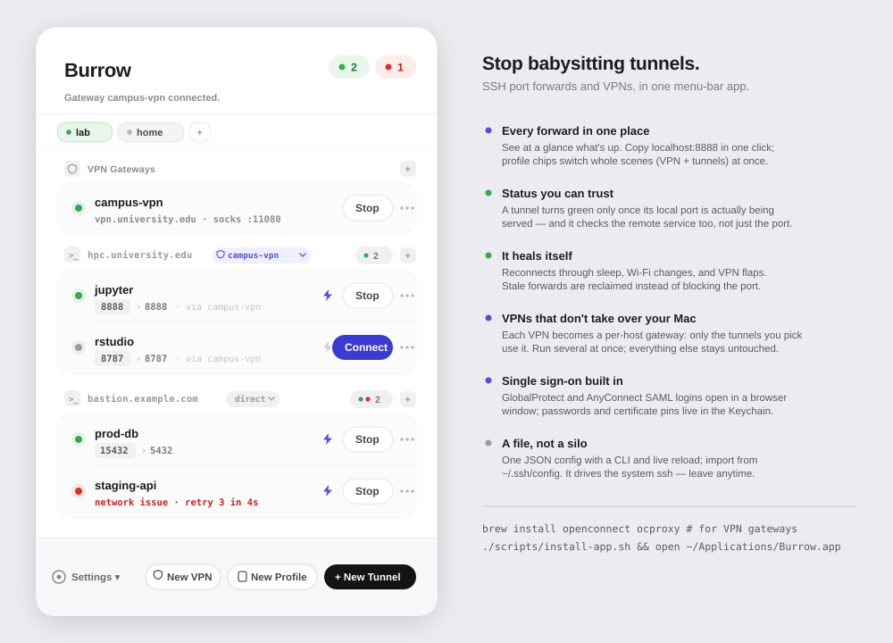

🧵
SSH tunnels, grouped
All your local/remote/dynamic forwards in one list, grouped by host with live status dots. Reconnect, edit, duplicate, or delete in a click. Burrow just supervises the system ssh — no custom stack.
A native menu-bar app that keeps your SSH port-forwards and corporate VPNs in one quiet place — reconnecting when they drop, never fighting your routing table, and never asking for root.
Free · macOS 13 or later · runs entirely on your Mac.

The day-to-day work — see what's up, fix what failed, get back to it — without a wall of terminal tabs.
All your local/remote/dynamic forwards in one list, grouped by host with live status dots. Reconnect, edit, duplicate, or delete in a click. Burrow just supervises the system ssh — no custom stack.
GlobalProtect, AnyConnect, Pulse, and Fortinet run entirely in userspace as local SOCKS5 ports — no root, no tun device, no routing changes. Run several at once; stay friendly with Tailscale.
Browser-based SSO that actually works — an embedded window for GlobalProtect, and Okta/Duo capture for AnyConnect when the official client's handshake won't cooperate. One-click certificate pinning.
Pick which VPN (or direct) each host rides from a dropdown; running tunnels restart onto the new route. Save profiles to bring a whole working set up or down at once.
A built-in 2FA code vault: enroll any otpauth:// secret, reveal the current code with a fingerprint, auto-copied with a live countdown. Seeds never leave your Keychain.
Auto-reconnect on drops, probes through the tunnel to catch dead-but-listening sessions, recovers cleanly from sleep, and only shows green once the forward truly owns its port.
Already connected with the official VPN client? Burrow notices the route exists and rides it directly instead of starting a second session that would kick you off.
The notarized DMG bundles everything it needs — double-click to install, no Homebrew, no terminal, no extra installs.
Everything lives in a single watched JSON file. Import straight from ~/.ssh/config, autodetect VPN servers from installed clients, and hand-edit any time — changes appear live.
Burrow never installs a kernel extension or rewrites your routes. It builds commands and supervises tools you already trust.
openconnect + ocproxy turn a VPN session into a plain local SOCKS5 port. No tun device, no root, no system-wide routing — so it can't break your other connections.
Each SSH forward that needs the VPN gets a ProxyCommand through that SOCKS port. The rest of your traffic stays exactly where it was.
Burrow runs /usr/bin/ssh and openconnect as child processes, watches their health, reconnects on failure, and reaps anything stale it left behind.
Yes — freeware. No accounts, no license keys, no trial timer, no feature gates, no ads.
No. SSH tunnels use the system ssh. VPN gateways run in userspace via openconnect + ocproxy as local SOCKS ports — no tun device, no admin privileges, no changes to your routing table.
The DMG is signed with an Apple Developer ID and notarized by Apple, so it opens without Gatekeeper warnings. Your SSH and VPN passwords are stored only in the macOS Keychain, and only after a successful connection. There's no telemetry.
No. If your official client (GlobalProtect, AnyConnect…) is already connected, Burrow detects that the route exists and uses it directly instead of opening a competing session. When the client is off, Burrow can bring the VPN up itself.
Download the DMG, drag Burrow to your Applications folder, and launch it — it lives in your menu bar.
macOS 13 or later. SSH tunnels need nothing else. VPN gateways are optional, and everything they need is bundled inside the app — no extra installs.